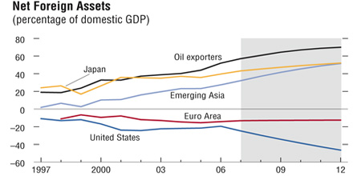

The Multilateral Consulation on Global Imbalances
By IMF StaffMultilateral consultations provide a new forum for discussion among members of the international community who share an interest in crucial economic issues. The consultations enable the IMF and its members to agree upon policy actions to address vulnerabilities that affect individual members and the global financial system. They will help policymakers to show that the measures they propose will be matched by measures taken by others, with benefits to all. The first multilateral consultation was launched in 2006 in order to address the issue of global payments imbalances with the IMF being entrusted to facilitate discussion and cooperation among senior policymakers. |
The multilateral consultation approach is an example of the Fund's role as a vehicle for international cooperation. It provides a channel for analysis and consensus-building and a framework that helps our members overcome hurdles to individual action by emphasizing the benefits of collaborative actions. Under a multilateral consultation, specific issues of global or regional significance are taken up collectively with some IMF members and, where relevant, with entities formed by groups of members. Each multilateral consultation will focus on a specific international economic or financial issue and directly involve the countries that are party to that issue.
The first multilateral consultation focused in a comprehensive and collective way on the issue of global imbalances and involved several systemically important members and groups of members—China, the Euro Area, Japan, Saudi Arabia, and the United States. The five economies are relevant to global imbalances in different ways: either because of their current account deficits or surpluses, or because they represent a very large share of world output. Over the course of the past year, the multilateral consultation discussions provided a forum for improved understanding and shared views on global imbalances, and the policies needed to reduce them while sustaining robust global growth. The five participants reported their policy plans in considerable detail to the semi-annual meeting of the IMF's membership in April 2007, where they were well received.
While multilateral dialogue can take place in other forums, the multilateral consultation approach is unique in that it brings together a small group of those countries that are most relevant to the issue at hand, under the auspices of a multilateral institution such as the IMF. This allows for a frank and focused discussion of the issues among the key players, while ensuring that—given the IMF's universal membership—the rest of the international community is also involved.
The Medium-Term Strategy and Multilateral Consultations
In 2004, the IMF launched a strategic review, known as the Medium-Term Strategy, to consider how best to redefine the role of the institution. The strategy identified surveillance—the IMF's process of economic monitoring and consultation—as an important public good and called for more active Fund engagement in the policy debates that shape public opinion and policy choices. To enhance the Fund's role in global surveillance, the strategy proposed a multilateral consultation procedure to make surveillance more effective.
At the April 2006 meeting of the International Monetary and Financial Committee (IMFC), the ministerial-level committee that provides policy guidance to the IMF, the Committee agreed that existing IMF surveillance arrangements should be expanded to include multilateral consultations. The Committee requested the IMF employ this vehicle in its approach to encouraging actions needed to reduce global imbalances.
The First Multilateral Consultation—Global Imbalances
The IMF has for a number of years emphasized the risks to sustained expansion of the world economy posed by global imbalances. There is broad agreement among the IMF's member countries that reducing imbalances is a shared responsibility, and that the risks of a disorderly adjustment of imbalances will be reduced by sustained policy actions across the major economies. The countries involved in the first multilateral consultation were chosen either because they are directly party to the existing imbalances through their current account deficits or surpluses, or because they represent a very large share of global output and could contribute to sustaining world growth as demand and savings patterns adjust.
Global imbalances refer to net deficits or surpluses in trade and investment among countries. Prolonged global imbalances give rise to concern because uncertainty exists regarding how far into the future they can continue to be financed, and whether the eventual adjustment will take place in an orderly fashion. The U.S. current account deficit, which was estimated at $848 billion, or 6.4 percent of GDP, in 2006, is matched by surpluses in oil producing countries, emerging Asia—including China—and Japan, as well as some small industrial countries. While there is some debate about the causes and risks related to global imbalances, there is general agreement that they are unsustainable over the longer term, and that an orderly unwinding would benefit the world economy.
At its April 2006 meeting, the IMFC reiterated its call for actions to implement a policy strategy to support an orderly unwinding of global imbalances, and welcomed the IMF's multilateral consultations approach. The strategy set forth by the IMFC called for: steps to boost national saving in the United States, including fiscal consolidation; further progress on growth-enhancing reforms in Europe; further structural reforms, including fiscal consolidation, in Japan; reforms to boost domestic demand in emerging Asia, together with greater exchange rate flexibility in a number of surplus countries; and increased spending consistent with absorptive capacity and macroeconomic stability in oil-producing countries.
Under the first multilateral consultation on global imbalances, IMF staff initially held bilateral discussions with senior officials of the five participants in the consultation and, over subsequent months, roundtable meetings with all of the participants together. All participants welcomed the consultation, and productive discussions were held on the problem and on policies both in the respective home countries and in the other participating countries.

The Results of the Multilateral Consultation on Global Imbalances
This first multilateral consultation has proven to be a fruitful initiative. In April 2007, the participants presented to the IMFC a joint document, in which each participant affirmed that reducing global imbalances in a manner compatible with sustained global growth was a multilateral challenge and a shared responsibility. The participants noted that each economy had made progress in implementing policies consistent with the IMFC strategy over the past year, and indicated that their policy plans—which each set out in some detail in the document—continue to be consistent with it in the future. Taken together, these policy plans include important steps in all areas of the IMFC strategy, and when implemented, would constitute a significant further step toward sustaining solid growth and reducing imbalances.
The Policy Plans China Over the past year, China's policy developments related to the IMFC strategy included the following:
China's future policy plans include the following:
Euro Area Over the past years, policies related to the IMFC strategy included structural reforms in three main markets:
Looking forward, policy plans in the Euro area include the following:
Japan Over the past year, developments in Japan's policies -related to the IMFC strategy included the following:
Looking forward, Japan's policy plans include the following:
Saudi Arabia Over the past year, developments in Saudi Arabia's policies related to the IMFC strategy included:
Looking forward, Saudi Arabia's policy plans include the following:
United States Over the past year, developments in U.S. policies related to the IMFC strategy included:
Looking forward, the U.S. authorities' policy plans include the following:
|
Global imbalances are a complex problem, and their unwinding requires changes in both private and public sector behavior. Over the last year, partly reflecting past policies in these countries, the imbalances have shown signs of stabilizing and of improving slightly. The policy plans these countries have resolved to follow are an important step to ensure continued movement in the right direction. The implementation by each participant of these policies—in combination—will constitute significant progress toward sustaining solid economic growth and resolving the imbalances. The IMF will continue to follow developments as they relate to global imbalances and the participants agreed to meet again should developments warrant.
What's Next
The multilateral consultation process has proven itself to be a flexible mechanism that allows meaningful dialogue and decisions to occur outside the confines of existing multilateral frameworks, by including all relevant players—whether G7 or other such groups—in key discussions. Overall, the experience gained from the process demonstrates that the multilateral consultation approach has been useful for addressing global issues through discussion and cooperation among members, and the approach should prove to be a valuable instrument going forward for enhancing and deepening Fund surveillance. A measure of success is that a second multilateral consultation, aimed at fostering dialogue on how financial globalization and innovation influence growth and stability, is under consideration. Like the first, this consultation would be between a selected group of economies that have a special relevance to the issue.